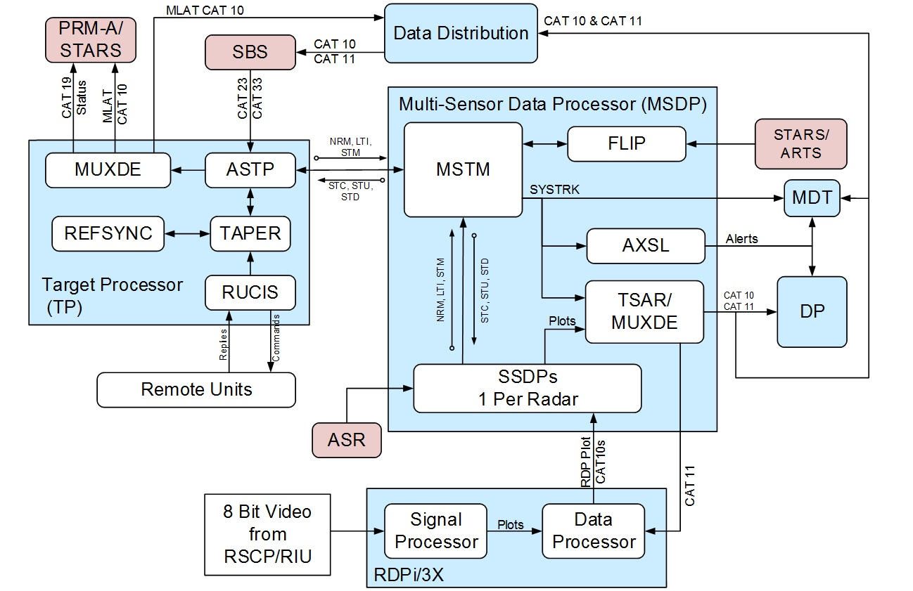

Precision Runway Monitoring System Alternative (PRM-A)
Target Processor (TP)
Surveillance Broadcast Service (SBS)
Data Distribution (DD)
Standard Terminal Automation Replacement System (STARS)
Maintenance Display Terminal (MDT)
Air Traffic Control Tower Display Processors (DPs)
Multi-Sensor Data Processor (MSDP)
Radar Data Processor (RDPi/3x)
Air traffic control radar beacon system (ATCRBS)
Airport Surveillance Radars (ASRs)
Surface Movement Radar (SMR)
RSCP Video (RSCP/RIU)
Multilateration Subsystem (MLAT)
Multi-Sensor Track Manager (MSTM)
Remote Units (RUs)
Flight Plan Interface Processor (FLIP)
ASDE-X Safety Logic (AXSL)
Airport Surveillance Track Processor (ASTP)
Single Sensor Data Processor (SSDP)
Target Situation Awareness and Reporting (TSAR)
Target Position Estimator (TAPER)
RefTran Synchronization (REFSYNC)
Multiplexor-Demultiplexor (MUXDE)
Remote Unit Control and Integration Scheduler (RUCIS)